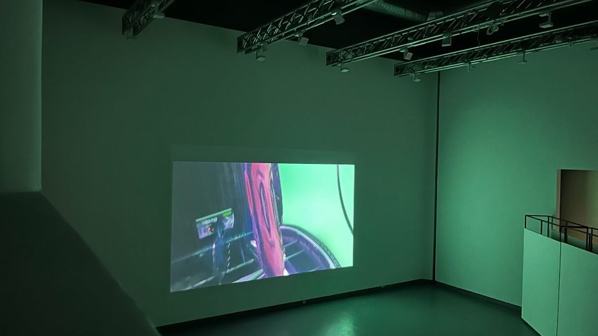
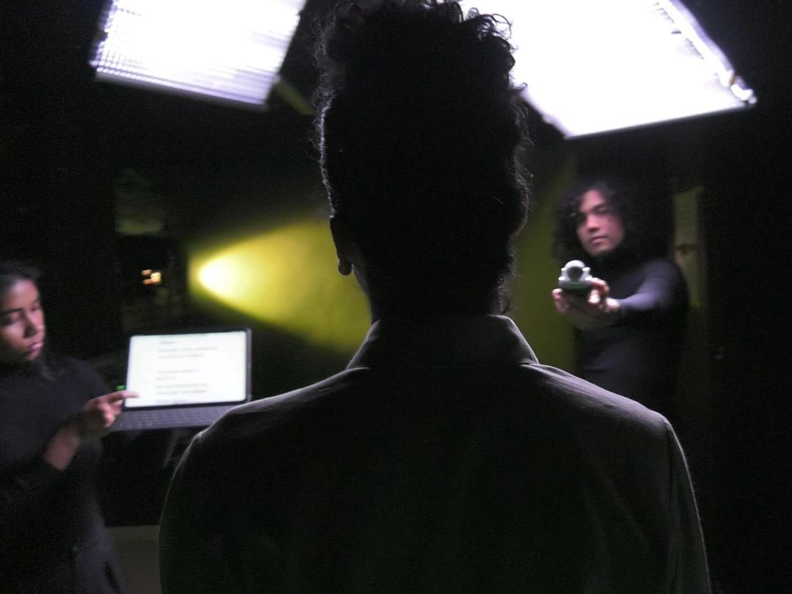
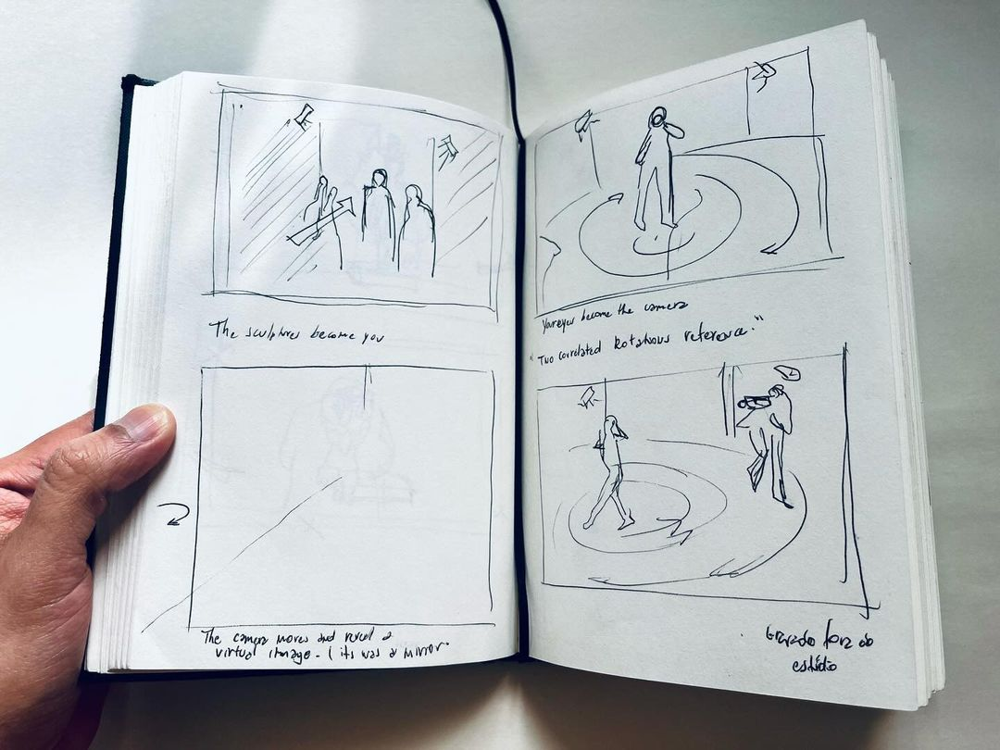

ways of not seeing
2024“Ways of Not Seeing” é resultado dos estudos em Cinema Expandido do Meisterschüler pela Hochschule für Grafik und Buchkunst (HGB), em Leipzig. A exibição foi realizada durante a Berlin Art Week na exposição Patterns of Seeing and Not Seeing.


A Opus elaborou um conjunto bi-color composto por duas peças: a camisa Op.1 No.4 e uma calça exclusiva para o projeto — ambas confeccionadas em algodão orgânico e viscose de manejo sustentável.

team
creation
Valério de Araújo Silva
Natasha Vergílio @_natashavergilio
Dan de Moura @itsdanmoura
Suellen Ferreira dos Santos @umaparaenseemberlim
direction, production, edit, concept
Valério de Araújo Silva
performance and text
Natasha Vergílio
camera performance and technical
Dan de Moura
supporting performance / lighting
Suellen Ferreira dos Santos
Valério de Araújo Silva
stylist
Danton Brando @dantonbrando
costume
Mateos Quadros @mateosquadros
Ateliê Opus @opus____
make up
@motomamiiiiiiiiiiiiiiiii
sound
Justin Wong @_justinwong
installation
Valério de Araújo Silva
Kang Eungbok @eungbok
Samuel Ellinghoven
special thanks
Hend Hussein @hendh.7
Clemens von Wedemeyer @vwedemeyer
Mareike Bernien
Su Yu Hsin @rcagnes
Sijo Choi Kim @sijo.sae
Ana Paula dos Santos @dossantos_ana_paula
Mashid Mahboubifar @maia___
Ilse Hafer
Jo Zahn
Moritz Dittrich coolkidsofhansaplatz